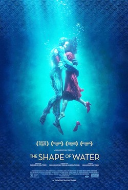
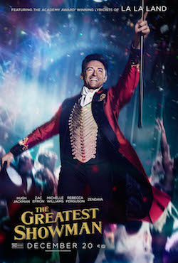

Trying to change the world! A fitness nut pretending to be a Law Student at Durham University.
|  |
The Shape of WaterElisa is a mute, isolated woman who works as a cleaning lady in a hidden, high-security government laboratory in 1962 Baltimore. Her life changes forever when she discovers the lab's classified secret -- a mysterious, scaled creature from South America that lives in a water tank. As Elisa develops a unique bond with her new friend, she soon learns that its fate and very survival lies in the hands of a hostile government agent and a marine biologist. |
|  |
The Greatest ShowmanInspired by the imagination of P. T. Barnum, The Greatest Showman is an original musical that celebrates the birth of show business & tells of a visionary who rose from nothing to create a spectacle that became a worldwide sensation. |
DunkirkIn May 1940, Germany advanced into France, trapping Allied troops on the beaches of Dunkirk. Under air and ground cover from British and French forces, troops were slowly and methodically evacuated from the beach using every serviceable naval and civilian vessel that could be found. At the end of this heroic mission, 330,000 French, British, Belgian and Dutch soldiers were safely evacuated. |